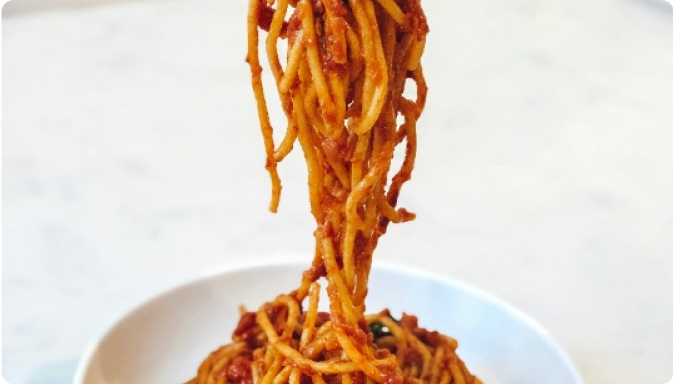
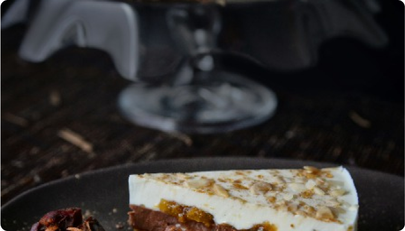

喫茶トキ
私专元
時を超える味わい、心に残るひとときをご堪能ください。
創業以来、変わらぬ味わいと心温まるひとときを提供し続けている喫茶店です。木のぬくもりに包まれた店内で、熟練のマスターが淹れるこだわりの一杯をお楽しみください。忙しい日常を忘れ、心安らぐ時間をお過ごしください。
マスターが作り出す、温もりの一杯と安らぎの空間
創業以来、変わらない笑顔と優しさでお客様を迎えるマスター。彼のこだわりは、一杯のコーヒーに心を込めること。毎朝、豆の焙煎から始まり、店内の清掃、仕込みまで、一つ一つ丁寧に行います。「この場所が、訪れる人々にとって安らぎの場所でありたい」というマスターの想いが、店内の温かい雰囲気や手作りの味わいに反映されています。
カフェメニュー
クラシックブレンドコーヒー
昭和の時代から愛され続ける、深いコクと豊かな香りが特徴のブレンドコーヒー。マスターが一杯一杯丁寧にハンドドリップで淹れています。
価格: 500円

昔ながらのナポリタン
トマトケチャップの懐かしい味わいに、シャキシャキの玉ねぎとピーマン、ソーセージが絡む、どこか懐かしい洋食メニュー。ボリュームたっぷりで、お腹も心も満たされます。
価格: 900円

自家製レアチーズケーキ
クリーミーで滑らかな口当たりが魅力のレアチーズケーキ。フルーツソースがかけられており、コーヒーや紅茶との相性も抜群です。店内で一から手作りしています。
価格: 600円